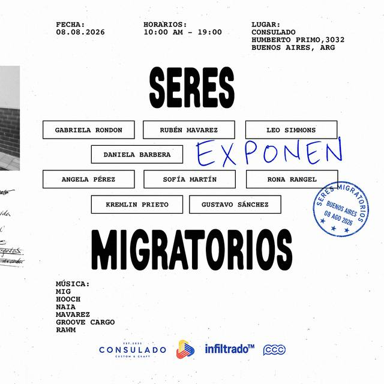
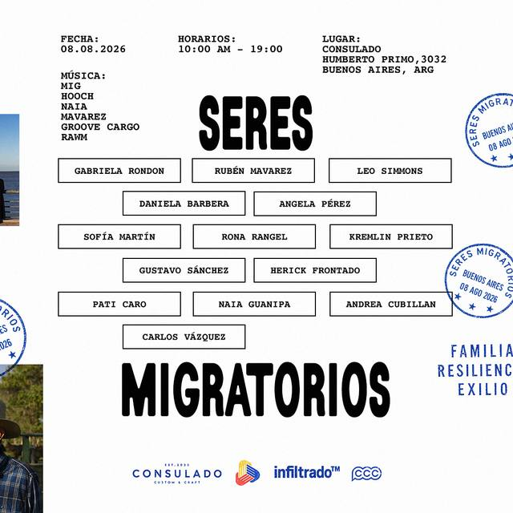
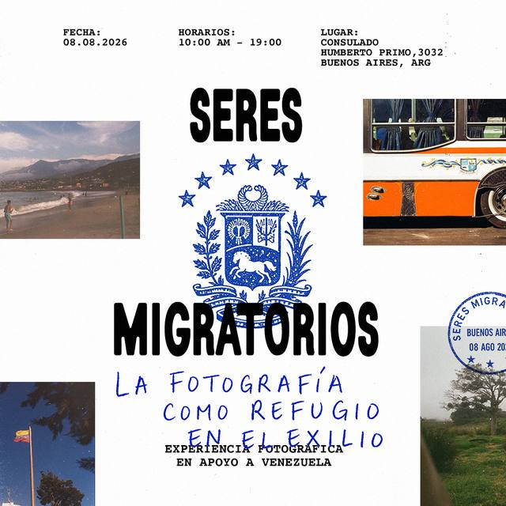
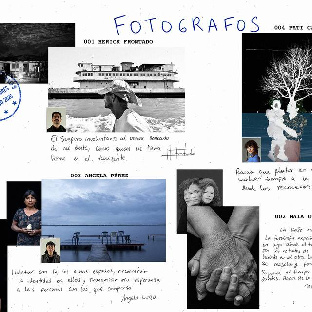
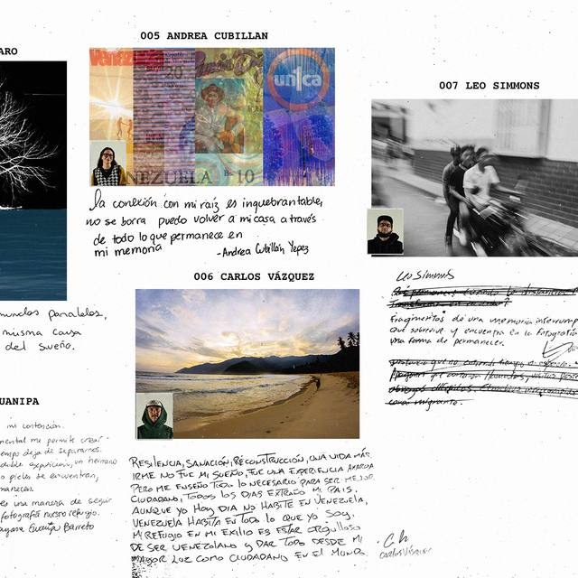
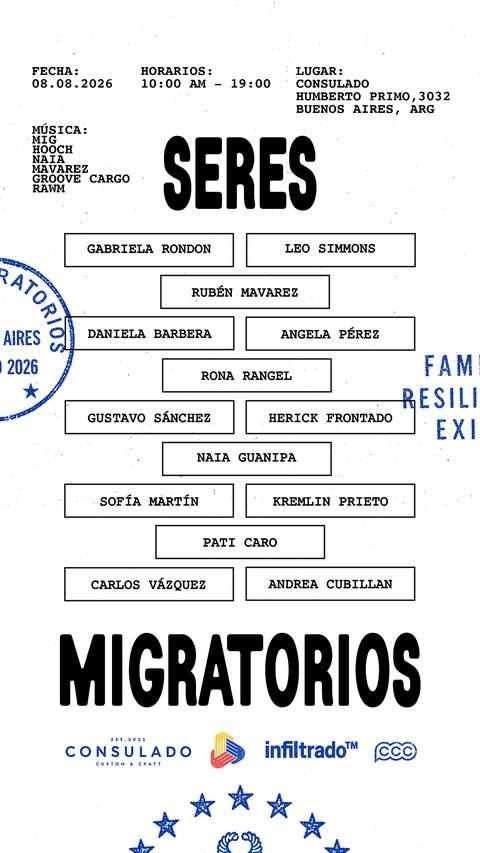

SERES MIGRATORIOS — SISTEMA DE DISEÑO V1
LÁMINA 09 · REFERENCIAS
de dónde viene todo esto
Las ocho piezas de la edición 01. Todo lo que está en las láminas 02 a 08 sale de acá: nada del sistema se inventó después.

POST "EXPONEN" · 1080×1080
BloqueFicha arriba, TitularPartido con las CajaNombre de quienes exponen en aparejo, Anotacion "EXPONEN" encima de las cajas, Sello y FranjaAliados al pie.

POST LISTA COMPLETA · 1080×1080
Las catorce CajaNombre en aparejo entre SERES y MIGRATORIOS, PalabrasClave cortadas por el margen derecho y dos Sello.

POST DEL CLAIM · 1080×1080
Anotacion manuscrita ocupando todo el slot central, FotoPegada sangrada en los cuatro bordes, SelloHorario y dos Sello superpuestos.

POST DEL ESCUDO · 1080×1080
Escudo en azul en el slot del TitularPartido, claim manuscrito y la bajada "EXPERIENCIA FOTOGRÁFICA EN APOYO A VENEZUELA".

FICHAS 001–004
FichaFotografo: número y nombre en mono 700, foto principal, retrato chico superpuesto abajo a la izquierda, frase manuscrita escaneada y firma. Título "FOTÓGRAFOS" manuscrito.

FICHAS 005–007
Continuación de la serie con la misma retícula de FichaFotografo. Confirma que la ficha funciona repetida, sin marco fijo.

COLLAGE
FotoPegada en sus tres variantes sobre papel, con PalabrasClave FAMILIA RESILIENCIA EXILIO. Base de la galería del sitio.

STORY 9:16 · 1080×1920
El mismo aparejo reducido a filas de 2 y 1 columnas, FranjaAliados y un arco de estrellas al pie. Es la referencia directa del Home mobile.
Piezas originales de la edición 01: sábado 08.08.2026, 10:00 AM – 19:00, CONSULADO, Humberto Primo 3032, Buenos Aires, ARG. Archivos fuente en los PSD y el AI del equipo; fuentes detectadas: Serial A (trial) y Courier Bold.
Reel de convocatoria · 13.07.2026
https://www.instagram.com/reel/DavMRiQJ9uB/
Post oficial del evento · 31.07.2026
https://www.instagram.com/p/DbdlYPyFuaH/